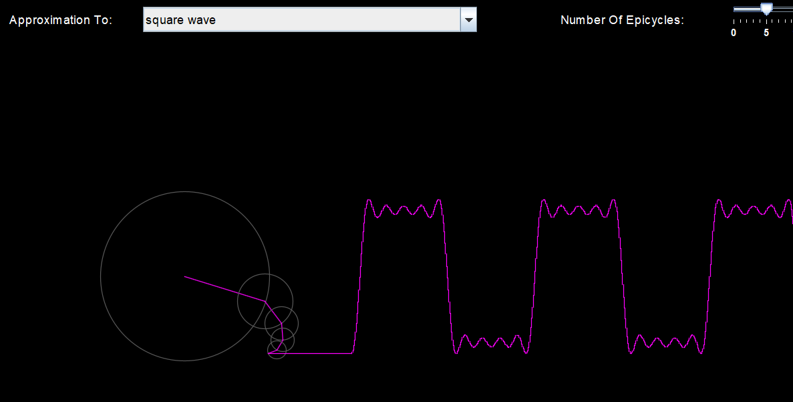
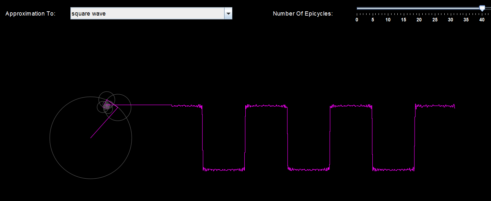
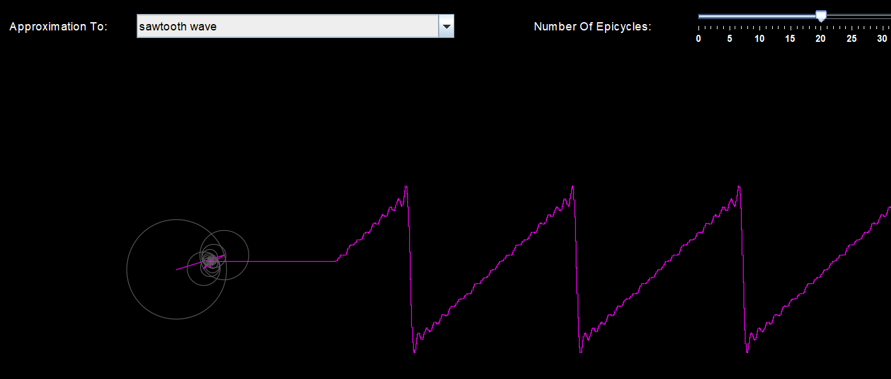
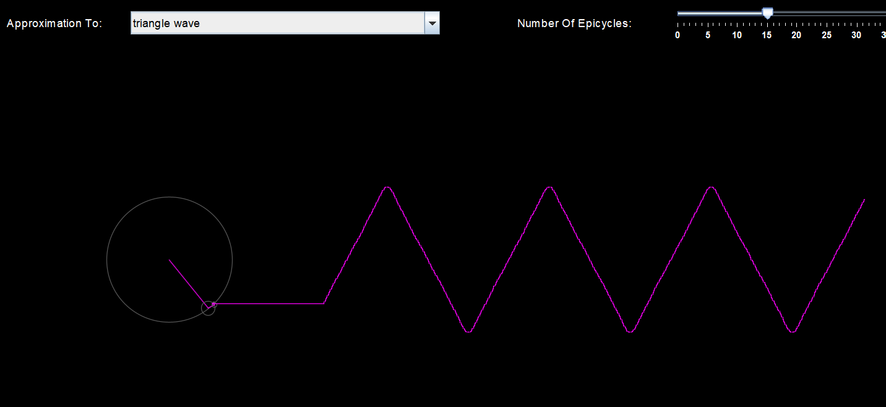
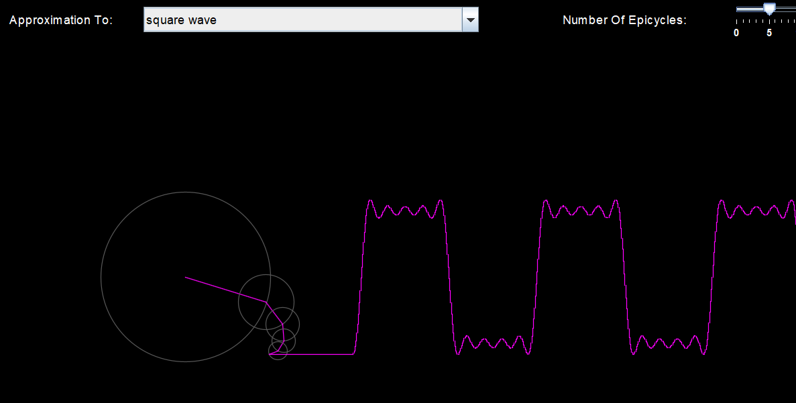
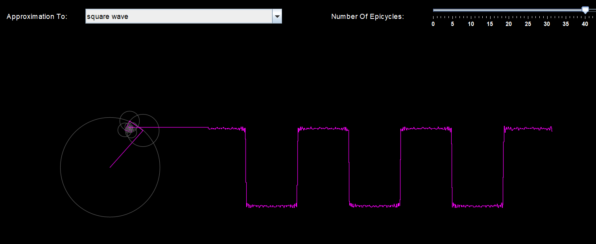
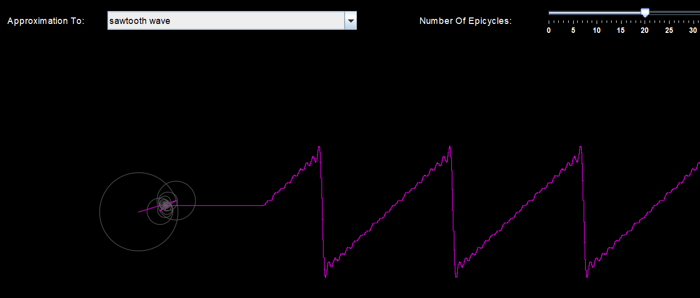
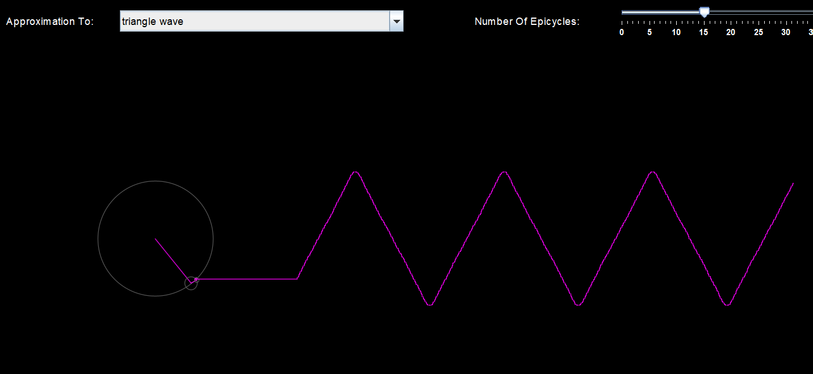

Fourier Series Simulation
Embark on a journey into the fascinating realm of signal processing with this Java-powered Fourier Series simulation. This interactive tool serves as a captivating exploration of the mathematical concept of Fourier Series, allowing users to visualize and comprehend complex waveforms and signal decomposition.